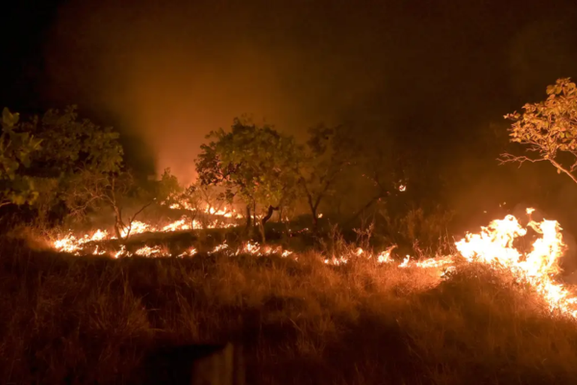

⚠️ATENÇÃO⚠️
Compromisso e Cuidado com os nossos Leitores
Nós da Papel News, temos uma missão que vai além de informar. Nós preocupamos genuinamente com o bem-estar de nossos leitores e buscamos oferecer não apenas notícias, mas também apoio e conscientização. Entendemos que cada pessoa que nos lê é parte de nossa grande família editorial.
Setembro é um mês emblemático para nós, marcado pela campanha de prevenção ao suicídio. É um período para reforçar a importância da saúde mental e do diálogo aberto sobre ansiedade e depressão. Sabemos que esses são desafios reais enfrentados por muitos e queremos estar ao seu lado, oferecendo palavras que confortam e informam.
Recomendamos que, ao sentir qualquer sintoma de ansiedade ou depressão, não hesite em buscar ajuda. Falar com alguém de confiança, seja um amigo ou familiar, pode ser o primeiro passo para encontrar suporte. Além disso, profissionais da saúde, como psicólogos, estão preparados para oferecer a assistência necessária.
Sua vida é preciosa! Queremos contribuir para que você encontre motivos para sorrir todos os dias. Por isso, nos dedicamos a criar conteúdos que informam, educam e inspiram. Estamos juntos nessa jornada, valorizando cada história e cada leitor.
Sua vida é valiosa e queremos vê-lo sorrir! 😁
Estamos aqui não apenas para trazer informações, mas para lembrar que você não está sozinho. 🙃
Tecnologia👨💻
Uma Audiência Decisiva nos EUA
O aplicativo de vídeos curtos TikTok, que conquistou uma base de usuários global, enfrenta agora um momento decisivo nos Estados Unidos. Uma audiência crucial está marcada para esta segunda-feira, que poderá determinar o futuro operacional do TikTok no país. A controvérsia gira em torno de uma nova legislação que ameaça banir o aplicativo a partir de janeiro de 2025, caso a empresa controladora, ByteDance, não se desvincule do Partido Comunista Chinês.
A audiência será conduzida pelo Tribunal de Apelações dos EUA para o Distrito de Columbia, onde representantes do TikTok e seus usuários apresentarão argumentos contra a nova lei. O governo americano, que também será ouvido, defende a proibição com base em preocupações de segurança nacional, temendo que a China possa acessar dados de cidadãos americanos ou realizar espionagem através do aplicativo.
O TikTok e a ByteDance argumentam que a lei é inconstitucional e viola os direitos de liberdade de expressão, representando "um afastamento radical da tradição deste país de defender uma internet aberta". A empresa também nega que a China tenha acesso aos dados dos usuários e afirma que a alienação societária proposta pela lei não é viável do ponto de vista tecnológico, comercial ou legal.
A decisão desta audiência é de extrema importância, pois os EUA representam o segundo maior mercado do TikTok, com cerca de 170 milhões de usuários americanos. A proibição do aplicativo não apenas afetaria a operação da empresa, mas também teria um impacto significativo na cultura digital e na economia criativa, dado o papel do TikTok como plataforma de lançamento para criadores de conteúdo e influenciadores.
A situação do TikTok nos EUA é um reflexo das tensões geopolíticas entre a China e o Ocidente, com a tecnologia no centro do palco. O desfecho desta audiência poderá não apenas decidir o destino do TikTok, mas também sinalizar o futuro das relações comerciais e de segurança digital entre as duas maiores economias do mundo.
Saúde💊
Os Perigos da Fumaça e a Urgência de Medidas Protetivas
A saúde pública enfrenta um novo desafio ambiental: os efeitos nocivos da fumaça decorrentes dos incêndios que têm assolado diversas regiões do país. Especialistas da área da saúde expressam profunda preocupação com o impacto imediato e potencialmente duradouro que a baixa qualidade do ar impõe, especialmente sobre as populações mais vulneráveis, como crianças e idosos.
A presidente da Sociedade Brasileira de Pneumologia e Tisiologia (SBPT), Margareth Dalcolmo, em recente entrevista, destacou a gravidade da situação. Segundo ela, a fuligem e os gases tóxicos presentes na fumaça podem causar ou exacerbar uma série de condições respiratórias, incluindo rinites, asma e bronquite aguda. A especialista alerta para o fato de que, embora ainda não seja possível determinar se os danos serão permanentes, a mistura de substâncias nocivas no ar é indiscutivelmente prejudicial aos alvéolos pulmonares.
A cidade de São Paulo, por exemplo, registrou níveis de substâncias poluentes que superam em muito os limites recomendados pela Organização Mundial da Saúde. Tais índices alarmantes refletem a urgência de ações preventivas e protetivas para a população.
Diante desse cenário, o Ministério da Saúde planeja atualizar as normas e recomendações para a população, visando minimizar os riscos à saúde. Algumas das medidas sugeridas incluem permanecer em ambientes fechados tanto quanto possível, aumentar a ingestão de água para manter as membranas respiratórias úmidas e evitar atividades físicas em horários de alta concentração de poluentes.
A SBPT foi convidada a colaborar na elaboração dessas novas diretrizes, que serão discutidas em uma reunião com autoridades ministeriais e especialistas. A expectativa é que essas medidas possam mitigar o impacto sobre o sistema de saúde, que já enfrenta um aumento na demanda por atendimento devido à crescente incidência de doenças respiratórias.
Essa notícia busca não apenas informar, mas também conscientizar sobre a importância de adotar comportamentos responsáveis diante de crises ambientais. A qualidade do ar que respiramos é um fator determinante para a nossa saúde e bem-estar. Portanto, é essencial que cada indivíduo esteja ciente dos riscos e das medidas de proteção recomendadas pelas autoridades de saúde.
Política🗳
Confronto no Debate Eleitoral entre Datena x Pablo Marçal
No cenário político atual, os debates eleitorais são momentos cruciais onde candidatos têm a oportunidade de apresentar suas propostas e confrontar as ideias adversárias. No entanto, o que era para ser um espaço de diálogo democrático, transformou-se em um palco de agressão física e verbal durante o último debate entre os candidatos à Prefeitura de São Paulo. O incidente envolvendo Pablo Marçal (PRTB) e José Luiz Datena (PSDB) gerou grande repercussão e preocupações sobre a integridade física e a saúde de Marçal.
Segundo relatos, Marçal foi agredido com uma cadeira por Datena, resultando em lesões que necessitaram de atendimento médico imediato. O candidato do PRTB foi levado ao Hospital Sírio-Libanês, onde foi atendido e diagnosticado com lesões na costela e dificuldades respiratórias. Em uma declaração via redes sociais, Marçal minimizou o ocorrido, referindo-se ao incidente como "apenas um esbarrão", mas confirmou que iria realizar exames de corpo delito após receber alta.
A equipe de Marçal expressou indignação com o ocorrido e cobrou punições adequadas para Datena. A agressão não só interrompeu o debate, mas também levantou questões sobre a segurança dos candidatos e a conduta aceitável durante esses eventos. A resposta de Datena ao incidente foi de justificar suas ações como necessárias para "conter" Marçal, alegando que o candidato demonstrou falta de caráter e representava uma ameaça à cidade de São Paulo.
O episódio ganhou destaque nas redes sociais, onde Marçal comparou a agressão sofrida com outros ataques políticos notórios, como a facada em Jair Bolsonaro em 2018 e o tiro que atingiu Donald Trump. Essas comparações, no entanto, foram rejeitadas por outros candidatos e comentaristas políticos.
Este incidente destaca a crescente tensão e polarização no cenário político brasileiro, onde a violência e a agressão substituem o debate de ideias e a busca por soluções conjuntas. A saúde de Pablo Marçal, após o ataque, tornou-se um símbolo das consequências físicas e simbólicas da política de confronto. Resta agora acompanhar as repercussões legais e eleitorais deste evento lamentável e refletir sobre como a política pode retornar a um caminho de respeito mútuo e diálogo construtivo.
Astronomia🌌
Alerta de Aurora Boreal Promete Luzes Dançantes no Céu nos EUA
Nessa noite de 16 de setembro de 2024 pode se tornar memorável para entusiastas do céu e observadores de estrelas em várias partes do mundo. Uma poderosa tempestade geomagnética, prevista pelo Centro de Previsão do Clima Espacial da Administração Nacional Oceânica e Atmosférica (NOAA), tem o potencial de desencadear um espetáculo de luzes do norte, ou aurora boreal, em latitudes médias, incluindo regiões dos Estados Unidos e da Europa.
Este fenômeno, que normalmente é reservado para as regiões polares, poderá ser visível muito mais ao sul do que o habitual, graças a uma série de eventos solares significativos. No dia 14 de setembro, uma erupção solar da classe X, a mais poderosa entre as classificações de flares solares, liberou uma grande quantidade de plasma e campo magnético em uma ejeção de massa coronal (CME). Esta CME está atualmente em rota de colisão com a Terra e sua chegada é esperada para coincidir com a noite do alerta.
As CMEs são conhecidas por transportar átomos eletricamente carregados, chamados íons. Quando esses íons colidem com a magnetosfera da Terra, eles podem desencadear tempestades geomagnéticas. Durante essas tempestades, os íons interagem com os gases na atmosfera terrestre, emitindo energia na forma de luz, que é o que observamos como as auroras boreais no hemisfério norte e austrais no hemisfério sul.
Além da CME, um buraco coronal na face do sol voltada para a Terra também está contribuindo para a intensidade da tempestade geomagnética prevista. Buracos coronais são regiões escuras na corona solar que possuem um campo magnético unipolar aberto, permitindo que o vento solar escape mais facilmente para o espaço. A combinação do vento solar mais rápido e a influência da CME iminente resultaram no aviso de tempestade geomagnética G3.
A classificação G3 indica uma tempestade forte, capaz de criar auroras que podem ser visíveis em latitudes tão ao sul quanto a Califórnia, Missouri e Oregon. Condições anteriores de tempestade G1, consideradas menores, já foram suficientes para produzir auroras notáveis nos EUA e Canadá, sugerindo que o espetáculo desta vez pode ser ainda mais impressionante.
Para aqueles que desejam testemunhar este raro e belo fenômeno, é recomendável buscar um local com pouca poluição luminosa e um horizonte claro. A expectativa é que as luzes possam ser vistas após o anoitecer, dependendo das condições climáticas locais.
Este evento não só proporciona uma oportunidade única para a apreciação da beleza natural do nosso planeta, mas também serve como um lembrete da poderosa influência do sol sobre a Terra. Enquanto os cientistas continuam a estudar esses fenômenos, o público em geral pode se maravilhar com a dança das luzes no céu, uma verdadeira demonstração da dinâmica cósmica em ação.
⚠️ATENÇÃO⚠️
Compromisso e Cuidado com os nossos Leitores
Nós da Papel News, temos uma missão que vai além de informar. Nós preocupamos genuinamente com o bem-estar de nossos leitores e buscamos oferecer não apenas notícias, mas também apoio e conscientização. Entendemos que cada pessoa que nos lê é parte de nossa grande família editorial.
Setembro é um mês emblemático para nós, marcado pela campanha de prevenção ao suicídio. É um período para reforçar a importância da saúde mental e do diálogo aberto sobre ansiedade e depressão. Sabemos que esses são desafios reais enfrentados por muitos e queremos estar ao seu lado, oferecendo palavras que confortam e informam.
Recomendamos que, ao sentir qualquer sintoma de ansiedade ou depressão, não hesite em buscar ajuda. Falar com alguém de confiança, seja um amigo ou familiar, pode ser o primeiro passo para encontrar suporte. Além disso, profissionais da saúde, como psicólogos, estão preparados para oferecer a assistência necessária.
Sua vida é preciosa! Queremos contribuir para que você encontre motivos para sorrir todos os dias. Por isso, nos dedicamos a criar conteúdos que informam, educam e inspiram. Estamos juntos nessa jornada, valorizando cada história e cada leitor.
Sua vida é valiosa e queremos vê-lo sorrir! 😁
Estamos aqui não apenas para trazer informações, mas para lembrar que você não está sozinho. 🙃